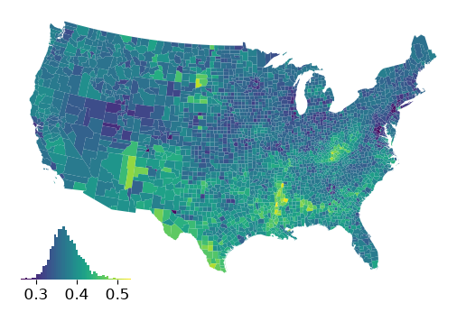
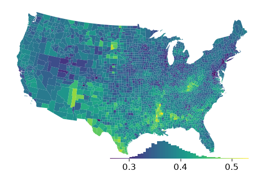
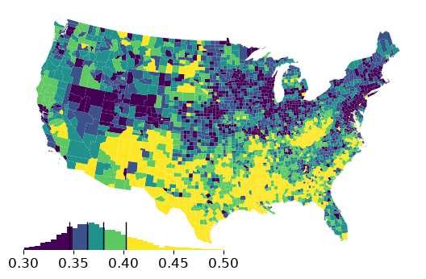
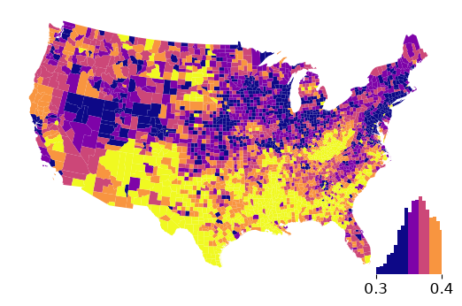
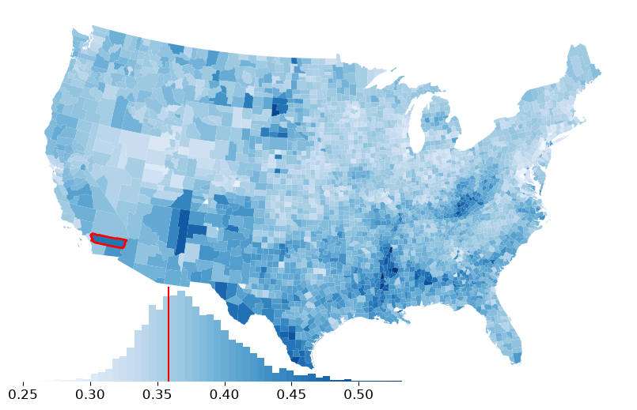

Using legendgram as a map legend¶
With mapclassify, you can replace standard legend with one composed of a histogram of the values showed in the colors you can see in the map.
import geopandas as gpd
from geodatasets import get_path
import mapclassify
gdf = gpd.read_file(get_path("geoda.ncovr")).to_crs(epsg=5070)
gdf.head()
Downloading file 'ncovr.zip' from 'https://geodacenter.github.io/data-and-lab//data/ncovr.zip' to '/home/runner/.cache/geodatasets'.
Extracting 'ncovr/NAT.gpkg' from '/home/runner/.cache/geodatasets/ncovr.zip' to '/home/runner/.cache/geodatasets/ncovr.zip.unzip'
| NAME | STATE_NAME | STATE_FIPS | CNTY_FIPS | FIPS | STFIPS | COFIPS | FIPSNO | SOUTH | HR60 | ... | BLK90 | GI59 | GI69 | GI79 | GI89 | FH60 | FH70 | FH80 | FH90 | geometry | |
|---|---|---|---|---|---|---|---|---|---|---|---|---|---|---|---|---|---|---|---|---|---|
| 0 | Lake of the Woods | Minnesota | 27 | 077 | 27077 | 27 | 77 | 27077 | 0 | 0.000000 | ... | 0.024534 | 0.285235 | 0.372336 | 0.342104 | 0.336455 | 11.279621 | 5.4 | 5.663881 | 9.515860 | POLYGON ((49050.745 2838555.999, 49054.346 285... |
| 1 | Ferry | Washington | 53 | 019 | 53019 | 53 | 19 | 53019 | 0 | 0.000000 | ... | 0.317712 | 0.256158 | 0.360665 | 0.361928 | 0.360640 | 10.053476 | 2.6 | 10.079576 | 11.397059 | POLYGON ((-1704187.741 2978490.561, -1690089.6... |
| 2 | Stevens | Washington | 53 | 065 | 53065 | 53 | 65 | 53065 | 0 | 1.863863 | ... | 0.210030 | 0.283999 | 0.394083 | 0.357566 | 0.369942 | 9.258437 | 5.6 | 6.812127 | 10.352015 | POLYGON ((-1598348.829 2964085.947, -1605943.0... |
| 3 | Okanogan | Washington | 53 | 047 | 53047 | 53 | 47 | 53047 | 0 | 2.612330 | ... | 0.155922 | 0.258540 | 0.371218 | 0.381240 | 0.394519 | 9.039900 | 8.1 | 10.084926 | 12.840340 | POLYGON ((-1713271.344 2979541.451, -1712880.7... |
| 4 | Pend Oreille | Washington | 53 | 051 | 53051 | 53 | 51 | 53051 | 0 | 0.000000 | ... | 0.134605 | 0.243263 | 0.365614 | 0.358706 | 0.387848 | 8.243930 | 4.1 | 7.557643 | 10.313002 | POLYGON ((-1574802.183 3066600.159, -1545432.6... |
5 rows × 70 columns
Using legendgrams with plots can be simple:
ax = gdf.plot("GI89")
ax.axis("off")
classifier = mapclassify.EqualInterval(gdf["GI89"], k=100)
classifier.plot_legendgram(ax=ax)
<AxesHostAxes: >

but you can also tweak quite a bit, like the size & location.
We’ll make the legend a little longer & shorter, as well as moving it to the lower right:
ax = gdf.plot("GI89")
ax.axis("off")
classifier = mapclassify.EqualInterval(gdf["GI89"], k=100)
classifier.plot_legendgram(ax=ax, legend_size=("60%", "12%"), loc="lower right")
<AxesHostAxes: >

We can clip the display to a smaller range to cut off any dangling long tails and use different scheme:
ax = gdf.plot("GI89", scheme="Quantiles")
ax.axis("off")
classifier = mapclassify.Quantiles(gdf["GI89"])
hax = classifier.plot_legendgram(
ax=ax,
legend_size=("50%", "12%"),
loc="lower left",
clip=(0.3, 0.5),
vlines=True,
)

ret = hax.hist(classifier.y, bins=50, color="0.1")
ret[2]
<BarContainer object of 50 artists>
hax.get_ylim()
(np.float64(0.0), np.float64(237.0375))
When calling plot_legendgram() the most recently plotted cmap is used unless otherwise stipulated:
ax = gdf.plot("GI89", cmap="plasma", scheme="Quantiles")
ax.axis("off")
classifier = mapclassify.Quantiles(gdf["GI89"])
hax = classifier.plot_legendgram(
ax=ax,
legend_size=("15%", "30%"),
loc="lower right",
clip=(0.3, 0.4),
)

Further, you can work directly on the Axes, if you prefer very fine-grained control over the plot parameters. legendgram returns the Axes on which the legendgram was plotted, so you can modify it after the fact:
riverside_loc = gdf.iloc[2255]
riverside = gpd.GeoDataFrame(riverside_loc.to_frame().T)
riverside
| NAME | STATE_NAME | STATE_FIPS | CNTY_FIPS | FIPS | STFIPS | COFIPS | FIPSNO | SOUTH | HR60 | ... | BLK90 | GI59 | GI69 | GI79 | GI89 | FH60 | FH70 | FH80 | FH90 | geometry | |
|---|---|---|---|---|---|---|---|---|---|---|---|---|---|---|---|---|---|---|---|---|---|
| 2255 | Riverside | California | 06 | 065 | 06065 | 6 | 65 | 6065 | 0 | 4.898903 | ... | 5.43321 | 0.284 | 0.376737 | 0.383226 | 0.368177 | 9.769959 | 9.2 | 11.145612 | 12.67834 | POLYGON ((-1841135.909 1346087.732, -1926639.5... |
1 rows × 70 columns
ax = gdf.plot("GI89", cmap="Blues", figsize=(10, 10))
ax.axis("off")
classifier = mapclassify.EqualInterval(gdf["GI89"], k=100)
hax = classifier.plot_legendgram(ax=ax, legend_size=("65%", "25%"))
# riverside in red
riverside.plot("GI89", linewidth=2, edgecolor="r", ax=ax)
# mark Riverside's Gini in the legend
hax.vlines(riverside_loc["GI89"], 0, 1, color="r", transform=hax.transAxes)
<matplotlib.collections.LineCollection at 0x70be78743110>
